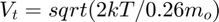
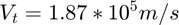
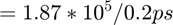
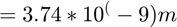
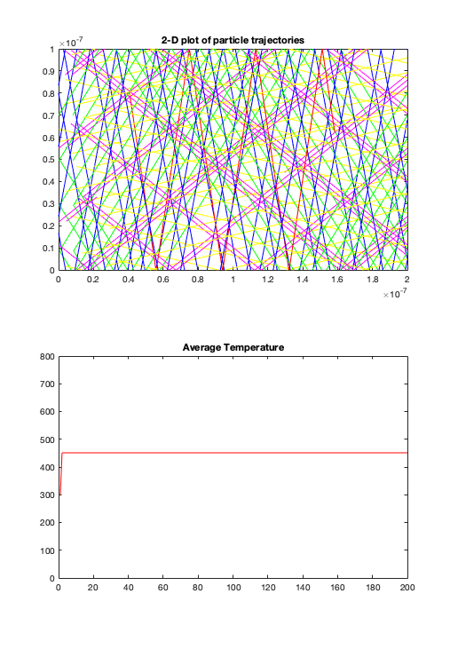
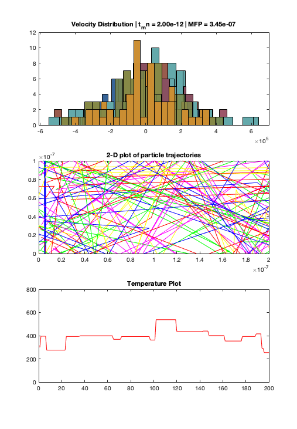
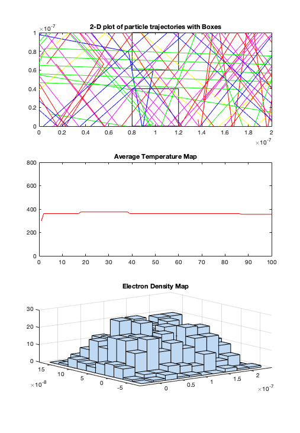

ELEC 4700 ASSIGNMENT 1
Contents
JOSEPH AMIAH - 101038089
Electron Modelling
a) The thermal veolocity is given by (T = 300K):


b) The Mean free path is:


c) 2-D plot of particle trajectories
clearvars clearvars -GLOBAL close all set(0,'DefaultFigureWindowStyle', 'docked') %CONSTANTS AND VARIABLES global C global Em T global BoundX BoundY global Pxp Px Pyp Py Vx Vy global Vtherm global nElectrons global t_mn C.q_0 = 1.60217653e-19; % electron charge C.hb = 1.054571596e-34; % Dirac constant C.h = C.hb * 2 * pi; % Planck constant C.m_0 = 9.10938215e-31; % electron mass C.kb = 1.3806504e-23; % Boltzmann constant C.eps_0 = 8.854187817e-12; % vacuum permittivity C.mu_0 = 1.2566370614e-6; % vacuum permeability C.c = 299792458; % speed of light C.g = 9.80665; % metres (32.1740 ft) per s² Em = 0.26 * C.m_0; % Mass of the Electron BoundX = 200e-9; % X boundary BoundY = 100e-9; % Y boundary T = 300; % Semiconductor temperature t_mn = 0.2e-11; % Mean time between collisions TimeSteps = 200; % Number of time steps nElectrons = 50; % Number of electrons dt = 1e-13; % Time Step Pxp(1: nElectrons) = rand(nElectrons, 1) * BoundX; Pyp(1: nElectrons) = rand(nElectrons, 1) * BoundY; Vtherm = sqrt(2 * C.kb * T/Em); Vx(1: nElectrons) = randn(nElectrons, 1) * Vtherm; Vy(1: nElectrons) = randn(nElectrons, 1) * Vtherm; myColors = ['r' 'b' 'g' 'y' 'm' ]; myColorTyp = 1; Pscat = 1 - exp(-(dt/t_mn)); a = randi(nElectrons,5,1); TAvgp = 300; for i=2:TimeSteps Px(1: nElectrons) = Pxp(1: nElectrons) + (Vx .* dt); Py(1: nElectrons) = Pyp(1: nElectrons) + (Vy .* dt); Vy((Py>BoundY) | (Py<0)) = -Vy((Py>BoundY) | (Py<0)); for j=1:5 subplot(2,1,1); plot([Pxp(a(j)) Px(a(j))], [Pyp(a(j)) Py(a(j))],myColors(j)); xlim([0 BoundX]); ylim([0 BoundY]); end pause(0.1) hold on title('2-D plot of particle trajectories'); VxAvg = mean(abs(Vx)); VyAvg = mean(abs(Vy)); TAvg = (((VxAvg^2)+ (VyAvg^2)) * Em)/(2 * C.kb); subplot(2,1,2); plot([i-1 i],[TAvgp TAvg],'r'); xlim([0 TimeSteps]); ylim([0 800]); pause(0.1) hold on title('Average Temperature'); Px(Px>BoundX) = Px(Px>BoundX)-BoundX; Px(Px<0) = BoundX; Pxp = Px; Pyp = Py; TAvgp = TAvg; end
Collisions with Mean Free Path (MFP)
clearvars clearvars -GLOBAL close all set(0,'DefaultFigureWindowStyle', 'docked') %CONSTANTS AND VARIABLES C.q_0 = 1.60217653e-19; % electron charge C.hb = 1.054571596e-34; % Dirac constant C.h = C.hb * 2 * pi; % Planck constant C.m_0 = 9.10938215e-31; % electron mass C.kb = 1.3806504e-23; % Boltzmann constant C.eps_0 = 8.854187817e-12; % vacuum permittivity C.mu_0 = 1.2566370614e-6; % vacuum permeability C.c = 299792458; % speed of light C.g = 9.80665; % metres (32.1740 ft) per s² Em = 0.26 * C.m_0; % Mass of the Electron BoundX = 200e-9; % X boundary BoundY = 100e-9; % Y boundary T = 300; % Semiconductor temperature t_mn = 0.2e-11; % Mean time between collisions TimeSteps = 200; % Number of time steps nElectrons = 50; % Number of electrons dt = 1e-13; % Time Step Pxp(1: nElectrons) = rand(nElectrons, 1) * BoundX; Pyp(1: nElectrons) = rand(nElectrons, 1) * BoundY; Vtherm = sqrt(2 * C.kb * T/Em); Vx(1: nElectrons) = randn(nElectrons, 1) * Vtherm; Vy(1: nElectrons) = randn(nElectrons, 1) * Vtherm; myColors = ['r' 'b' 'g' 'y' 'm' ]; myColorTyp = 1; Pscat = 1 - exp(-(dt/t_mn)); a = randi(nElectrons,5,1); TAvgp = 300; for i=2:TimeSteps if(Pscat > rand()) Vx(1: nElectrons) = randn(nElectrons, 1) * Vtherm; Vy(1: nElectrons) = randn(nElectrons, 1) * Vtherm; end Px(1: nElectrons) = Pxp(1: nElectrons) + (Vx .* dt); Py(1: nElectrons) = Pyp(1: nElectrons) + (Vy .* dt); Vy((Py>BoundY) | (Py<0)) = -Vy((Py>BoundY) | (Py<0)); for j=1:5 subplot(3,1,2); plot([Pxp(a(j)) Px(a(j))], [Pyp(a(j)) Py(a(j))],myColors(j)); xlim([0 BoundX]); ylim([0 BoundY]); end pause(0.1) hold on title('2-D plot of particle trajectories'); VxAvg = mean(abs(Vx)); VyAvg = mean(abs(Vy)); TAvg = (((VxAvg^2)+ (VyAvg^2)) * Em)/(2 * C.kb); VAvg = sqrt(((VxAvg^2)+ (VyAvg^2))); subplot(3,1,3); plot([i-1 i],[TAvgp TAvg],'r'); xlim([0 TimeSteps]); ylim([0 800]); pause(0.1) hold on title('Temperature Plot'); Px(Px>BoundX) = Px(Px>BoundX)-BoundX; Px(Px<0) = BoundX; Pxp = Px; Pyp = Py; t_mnCalc = -dt/log(1 - Pscat); MFP = VAvg * t_mnCalc; TAvgp = TAvg; subplot(3,1,1); histogram(Vx,20); hold on title( sprintf('Velocity Distribution | t_mn = %0.2e | MFP = %0.2e', t_mnCalc, MFP)); end % %
Enhancements
clearvars clearvars -GLOBAL close all set(0,'DefaultFigureWindowStyle', 'docked') C.q_0 = 1.60217653e-19; % electron charge C.hb = 1.054571596e-34; % Dirac constant C.h = C.hb * 2 * pi; % Planck constant C.m_0 = 9.10938215e-31; % electron mass C.kb = 1.3806504e-23; % Boltzmann constant C.eps_0 = 8.854187817e-12; % vacuum permittivity C.mu_0 = 1.2566370614e-6; % vacuum permeability C.c = 299792458; % speed of light C.g = 9.80665; % metres (32.1740 ft) per s² Em = 0.26 * C.m_0; % Mass of the Electron BoundX = 200e-9; % X boundary BoundY = 100e-9; % Y boundary T = 300; % Semiconductor temperature t_mn = 0.2e-11; % Mean time between collisions TimeSteps = 100; % Number of time steps nElectrons = 1000; % Number of electrons dt = 1e-13; % Time Step % BOX 1 Boundaries Box1Bnd1x = 0.8e-7; Box1Bnd1y = 1e-7; Box1Bnd2x = 1.2e-7; Box1Bnd2y = 1e-7; Box1Bnd3x = 1.2e-7; Box1Bnd3y = 0.6e-7; Box1Bnd4x = 0.8e-7; Box1Bnd4y = 0.6e-7; % BOX 2 Boundaries Box2Bnd1x = 0.8e-7; Box2Bnd1y = 0.4e-7; Box2Bnd2x = 1.2e-7; Box2Bnd2y = 0.4e-7; Box2Bnd3x = 1.2e-7; Box2Bnd3y = 0; Box2Bnd4x = 0.8e-7; Box2Bnd4y = 0; subplot(3,1,1); myBoxes(Box1Bnd1x, Box1Bnd1y, Box1Bnd2x, Box1Bnd2y, Box1Bnd3x, Box1Bnd3y, Box1Bnd4x, Box1Bnd4y); myBoxes(Box2Bnd1x, Box2Bnd1y, Box2Bnd2x, Box2Bnd2y, Box2Bnd3x, Box2Bnd3y, Box2Bnd4x, Box2Bnd4y); hold on %INITITAL POSITIONS %Check if electrons are within Box 1 and Box 2 x = randi(nElectrons,1); Pxp(1: x) = ((Box2Bnd4x - 0).*rand(x, 1))* BoundX; Pxp(x+1: nElectrons) = ((BoundX - Box2Bnd3x).*rand(nElectrons - x, 1) + Box2Bnd3x )* BoundX; Pyp(1: nElectrons) = rand(nElectrons, 1) * BoundY; Vtherm = sqrt(2 * C.kb * T/Em); Vx(1: nElectrons) = randn(nElectrons, 1) * Vtherm; Vy(1: nElectrons) = randn(nElectrons, 1) * Vtherm; Px(1: nElectrons) = Pxp(1: nElectrons) + (Vx .* dt); Py(1: nElectrons) = Pyp(1: nElectrons) + (Vy .* dt); myColors = ['r' 'b' 'g' 'y' 'm' ]; myColorTyp = 1; Pscat = 1 - exp(-(dt/t_mn)); a = randi(nElectrons,5,1); TAvgp = 300; for i=2:TimeSteps if(Pscat > rand()) Vx(1: nElectrons) = randn(nElectrons, 1) * Vtherm; Vy(1: nElectrons) = randn(nElectrons, 1) * Vtherm; end Vy((Py>BoundY) | (Py<0)) = -Vy((Py>BoundY) | (Py<0)); for j=1:5 subplot(3,1,1); plot([Pxp(a(j)) Px(a(j))], [Pyp(a(j)) Py(a(j))],myColors(j)); xlim([0 BoundX]); ylim([0 BoundY]); end pause(0.1) hold on title('2-D plot of particle trajectories with Boxes'); VxAvg = mean(abs(Vx)); VyAvg = mean(abs(Vy)); TAvg = (((VxAvg^2)+ (VyAvg^2)) * Em)/(2 * C.kb); subplot(3,1,2); plot([i-1 i],[TAvgp TAvg],'r'); xlim([0 TimeSteps]); ylim([0 800]); pause(0.1) hold on title('Average Temperature Map'); Px(Px>BoundX) = Px(Px>BoundX)-BoundX; Px(Px<0) = BoundX; Pxp = Px; Pyp = Py; TAvgp = TAvg; Px(1: nElectrons) = Pxp(1: nElectrons) + (Vx .* dt); Py(1: nElectrons) = Pyp(1: nElectrons) + (Vy .* dt); end subplot(3,1,3); hist3([Px.',Py.']); title('Electron Density Map');